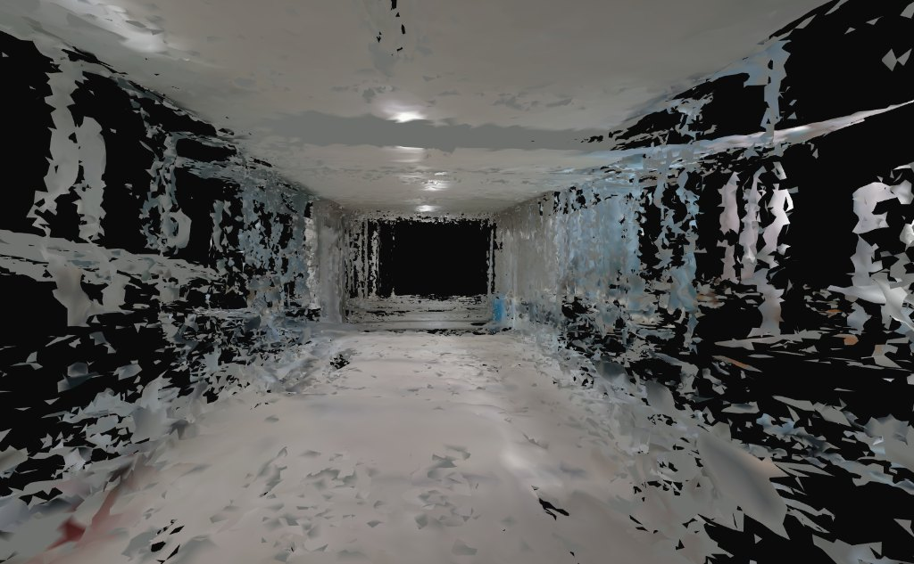
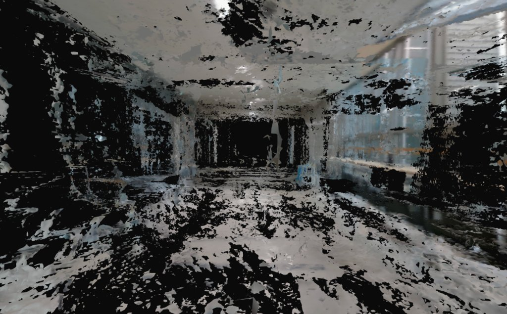

포트폴리오 / 프로젝트
auto-mobility
RGB-D 카메라로 찍은 실내 공간을 3D로 복원하고 센서 깊이로 검증하는 팀 프로젝트
개요
자율주행·로봇을 시뮬레이터에서 시험하려면 실제 공간을 닮은 3D 환경이 필요합니다. 전용 스캐너 대신 RGB-D 카메라(색과 거리를 함께 찍는 카메라) 한 대로 실내를 복원하고, 그 결과가 실제와 얼마나 다른지 확인하는 흐름을 만든 피지컬 AI(Real-to-Sim) 팀 프로젝트입니다. 온라인 현장실습(협력기관 (주)퓨처드라이브)으로 진행했습니다.
제가 맡은 일
- 두 SLAM(RTAB-Map·cuVSLAM)의 비교와 벤치마크 평가
- 촬영부터 평가까지의 파이프라인 구조와 실행 스크립트
- 데이터 수집·프레임 추출·프레임 분할, GPU 복원 연결 구현 주도
팀원 담당·팀 공통
3D 복원·메쉬 생성과 개발 환경·센서 통신 최적화는 팀원이 주로 맡았습니다. 세 명 모두 처음 접한 분야였고, 공용 노트북 1대라 촬영과 환경 문제는 함께 풀었습니다.
결과 예시


실제 촬영 데이터로 복원한 복도입니다. 검은 부분은 표면이 복원되지 않은 곳입니다. 두 화면은 보는 위치가 달라 두 방식의 우열 비교용은 아닙니다.
동작 흐름
카메라가 어디를 어떻게 움직였는지 구하고(SLAM), 그 위치에 깊이 사진을 겹쳐 3D 표면을 만듭니다.
- 센서 데이터 저장색·깊이·관성 값을 녹화 파일로 보존
- SLAM 2종RTAB-Map과 cuVSLAM으로 이동 경로 계산
- 3D 메쉬깊이 사진을 하나의 표면으로 합침 (TSDF)
- 깊이 대조메쉬에서 다시 그린 깊이와 센서 깊이를 픽셀 단위로 비교
녹화와 계산을 나눴기 때문에, 같은 원본에 알고리즘과 설정을 바꿔 가며 다시 돌릴 수 있습니다.
사례
촬영: 끊기는 프레임을 설정과 환경으로 해결 (팀 공동)
측정하며 해상도·환경·설정을 바꾸고, 녹화와 SLAM 계산을 분리 운영 기록
가상머신(VMware)에서는 카메라 프레임이 제대로 들어오지 않았고, GPU도 쓸 수 없었습니다. 무엇이 수신 속도를 떨어뜨리는지 측정하며 좁혔습니다.
해상도별 깊이 수신 (VMware, 초당 장수)
- 640×48029.1
- 848×48019.4
촬영 중 위치 계산 속도 (VMware, 초당 횟수)
- 8초 후28
- 18초 후14
- 28초 후12
전송 방식(QoS) 설정 (WSL2, 초당 장수)
- 설정 지정약 10
- 설정 제거30.0
| 확인한 것 | 바꾼 것 |
|---|---|
| 848×480에서 깊이 프레임이 빠짐 | 640×480, 초당 30장으로 고정 |
| 시작 직후에는 빠르던 위치 계산이 시간이 지나며 느려짐 | 먼저 녹화하고, SLAM은 녹화 파일로 나중에 실행 |
| 가상머신에서는 GPU 연산을 쓸 수 없음 | WSL2로 환경 이전 |
| 전송 방식 설정을 넣으면 카메라 속도가 급락 | 해당 설정을 제거하고, 다시 들어가지 않도록 테스트로 확인 |
결론시작 몇 초의 속도가 아니라 촬영 내내 유지되는지를 확인
천천히 움직이고 카메라를 고정하는 촬영 요령도 함께 익혔습니다.
조각난 3D 복원: 좌표 기준과 깊이 거르기 규칙을 수정 (팀 공동)
공간이 어긋나고 부서지는 원인을 코드의 입출력에서 확인
복원 결과가 조각난 표면으로 나왔고, 한쪽 결과는 같은 공간이 90° 돌아간 채 겹쳐 보였습니다. 센서 녹화를 먼저 점검한 뒤, 단계 사이에서 무엇을 기준으로 값을 주고받는지 확인했습니다.
- 좌표 기준 불일치SLAM은 로봇 몸체 기준 위치를 내보내고, 복원은 카메라 렌즈 기준으로 해석 → 렌즈 기준으로 변환해 출력
- 깊이 과다 제거초안 메쉬와 비교해 거르면서, 비교할 표면이 없는 곳의 측정값까지 버림 → 비교할 수 없으면 유지하고, 크게 다를 때만 제거
- 시간이 먼 위치 연결최대 0.2초 차이 나는 위치를 그대로 사용 → 0.05초 이내에서 앞뒤 위치를 보간
- 재발 방지
- 저장해 둔 이동 경로에 좌표 기준이 적혀 있지 않거나 옛 형식이면 다시 계산하도록 변경
결론값만 넘기지 않고, 좌표 기준까지 맞춰서 연결
원인별로 결과가 얼마나 좋아졌는지를 따로 측정한 기록은 확인하지 못했습니다.
두 SLAM 비교: CPU 방식과 GPU 방식을 노트북 1대에서 실행
CPU와 GPU를 함께 활용하되, 무거운 작업은 순서대로 배치
위치 추정은 계산 방식이 다른 CPU 중심의 RTAB-Map과 GPU를 쓰는 cuVSLAM을 비교했습니다. 정해진 기간에 노트북 1대의 성능을 최대한 쓰려 했지만, 무거운 작업이 겹치면 과부하가 걸릴 수 있었습니다. 그래서 한 번에 하나씩 실행하고 CPU 스레드(동시에 계산하는 작업 줄기) 수를 단계마다 나눴습니다.
- cuVSLAM 위치 추정계산은 GPU가 담당 · CPU 스레드 3개
- RTAB-Map 위치 추정CPU 계산이 중심 · CPU 스레드 6개
- 3D 복원GPU 작업은 한 번에 하나 · CPU 스레드 4개
- 메모리
- cuVSLAM과 3D 복원은 별도 프로세스로 실행해, 끝나면 GPU 메모리를 돌려받도록 구성
- 특성
- RTAB-Map은 지도 관리와 경로 보정, cuVSLAM은 GPU 처리 속도에 강점이 있었습니다. 대신 cuVSLAM은 무늬 없는 벽·어두운 곳·흔들림에 민감했습니다.
- 같은 조건
- 두 방식 모두 지나온 경로를 보정한 결과를 카메라 렌즈 기준으로 내보내고, 같은 평가 프레임을 쓰도록 맞춤
결론처리 장치가 다른 두 방식을 한 노트북의 한 흐름에 연결
같은 조건으로 맞춘 뒤의 정량 비교 결과는 확인하지 못해, 어느 방식이 낫다고 결론 내리지 않습니다.
메쉬 품질 평가: 눈으로 보는 확인에서 수치 측정으로
복원에 쓰지 않은 프레임의 센서 깊이와 메쉬를 픽셀 단위로 대조
메쉬를 화면에서 돌려 보는 것만으로는 어느 결과가 센서가 본 공간에 더 가까운지 판단하기 어렵습니다. 그래서 같은 카메라 위치에서 메쉬를 깊이 사진으로 다시 그리고, 센서 깊이와 비교하는 평가를 만들었습니다.
- 깊이 오차두 깊이 차이의 평균, 그리고 오차의 95%가 들어오는 값
- 허용 범위 안 비율차이가 10·20·50mm 이내인 픽셀의 비율
- 복원 범위센서 깊이가 있는 픽셀 중 메쉬도 있는 비율
- 함께 보기
- 오차는 메쉬가 있는 곳에서만 계산됩니다. 구멍이 많아도 좋아 보일 수 있어 복원 범위를 함께 확인합니다.
- 누출 차단
- 평가 프레임이 복원에도 들어가던 것을 점검에서 확인해, 복원 단계에서 제외하고 섞이면 실행이 멈추도록 검사
- 나누는 법
- 바로 옆 프레임은 거의 같은 장면이라 이동 경로의 연속 구간 단위로 분리하고, 두 SLAM에 같은 평가 구간을 사용
- 결과물
- 채점용 메쉬와 별도로, 평가 프레임까지 포함해 다시 복원한 최종 사용용 메쉬를 생성
결론눈으로 확인하는 데서 그치지 않고, 같은 기준의 수치로 비교하는 평가를 시도
센서 깊이를 기준으로 한 평가라 실제 치수의 정확도와는 다릅니다. 평가 프레임을 분리한 뒤의 최종 측정값은 확인하지 못했습니다.
한계
| 복원 정확도 | 최종 성능 수치는 확인하지 못함확인한 자료에는 평가 프레임을 분리하기 전의 중간 결과만 있어, 최종 성능 수치로 쓰지 않았습니다. |
|---|---|
| 시뮬레이터 | Isaac Sim 주행 검증은 하지 못함만든 메쉬를 불러오는 스크립트까지 작성했습니다. |
| 촬영 측정 | 특정 장비와 환경의 값카메라 속도는 사용한 노트북과 가상 환경에서 잰 짧은 측정이며, 다른 환경에는 그대로 적용할 수 없습니다. |
| 복원 품질 | 구멍이 남아 있음보급형 카메라의 시야각·해상도·롤링 셔터 같은 한계가 있었고, 복도처럼 무늬가 적은 공간은 위치 추정도 어려웠습니다. |